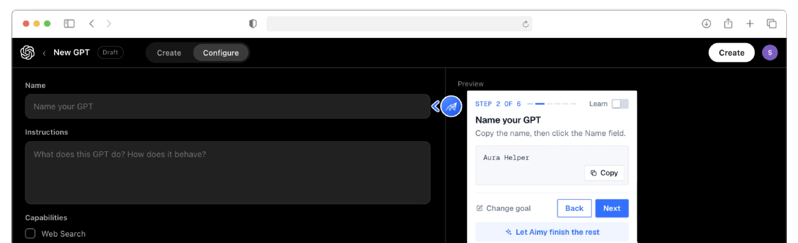

Learn
Every course is built around the job a person does, on the AI tools their organisation already approves.
Case study 01 · myAIcademy
Say helloEdTech · AI adoption
The adoption layer that turns AI licences into finished work. I designed the product and the brand end to end.


Overview
Not another course library. myAIcademy teaches people inside their own job, on the AI tools their company already approves, and proves the work got done.
Every course is built around the job a person does, on the AI tools their organisation already approves.
Every lesson is a follow-along on real work, not a video to watch and forget.
The lesson ends, the work doesn't. Aimy sits beside the approved tool and walks people to a finished result.
The problem
Licences went out by the million. The results didn't follow.
80%
of organisations report no material earnings impact from AI yet.
30M+ Copilot seats · Microsoft · McKinsey 2025
1 in 5 companies sees earnings impact 4 in 5 see none
Research
Across more than 10,000 professionals trained in person, one question came up in every room.
“How does my team use this in its actual work?”
Employees know the tool is there. They don't know what to do inside it. So the product had to start from the job, not from the tool.
Approach
One loop from the first lesson to finished, verified work, designed as a single product rather than three tools.
User needs
From the training rooms to the first prototypes, the same four needs kept coming back, from the narrowest to the most important.
Priorities
Each need became one product decision, built in this order.
Onboarding asks about the job first, then shapes the path.
Step by step, on the real tool, with a real outcome.
Guidance that lives where the work happens.
One shareable proof of skill for every finished path.
The product
Real screens from the app, iOS, Android and web share one system.
01 · Learn
A few questions about your role, and your learning path takes shape: a consultant, a teacher and a lawyer each get courses built around their own work, on the tools their company approves.
02 · Practice
Instead of a video library, each step is done on the real tool. Here a learner builds a salon website in Lovable, with every screen explained as it appears.
03 · Aimy · prototype
Aimy works beside the approved tool, here inside ChatGPT's GPT builder, and walks people through each step until it's finished and verified.

Brand
A paper plane mid-flight: learning that leaves the classroom and goes to work. I carried it through the app, the site, the decks and social.
Style guide
A calm, dark interface with one confident blue, so the learner's own work is always the brightest thing on screen.
Positioning
The design had to make the difference obvious in the product itself, not only in the pitch.
More coverage → better paths → completion data → stronger renewals
Impact
Where the product and the programmes stand today.
10,000+
professionals trained
72h
to rebuild learning paths after a major tool release
3
platforms from one design system: iOS, Android and web
My role
Research synthesis, flows, onboarding, the lesson player and Aimy, across iOS, Android and web.
One dark system with a single accent, built in Figma and shipped to all three platforms.
Identity, website, investor and sales decks, social, and the launch visuals.
Prototyping in code with Claude Code, imagery with Higgsfield, lesson voice-overs with ElevenLabs, pipelines in n8n.